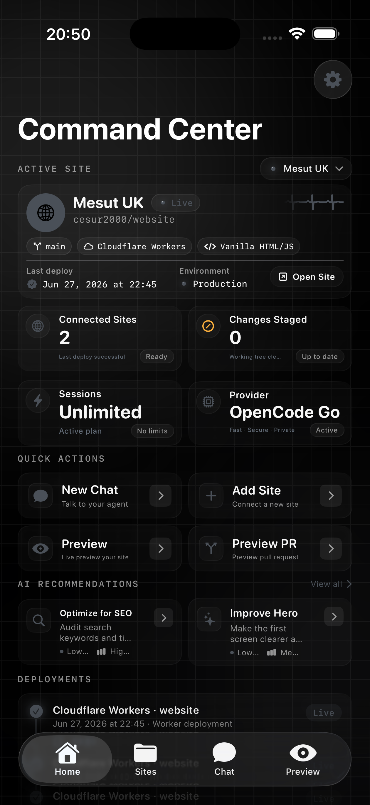
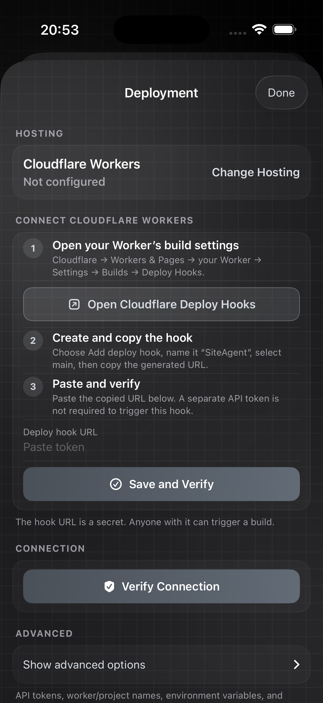
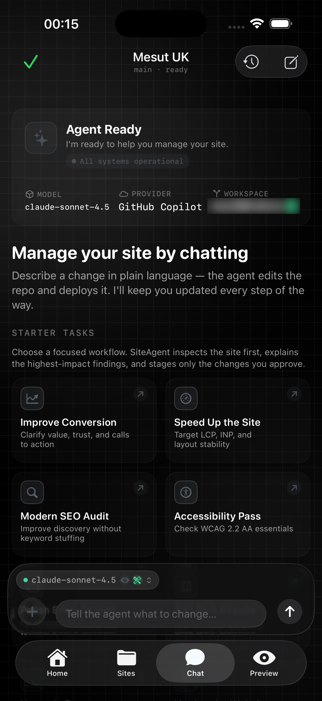
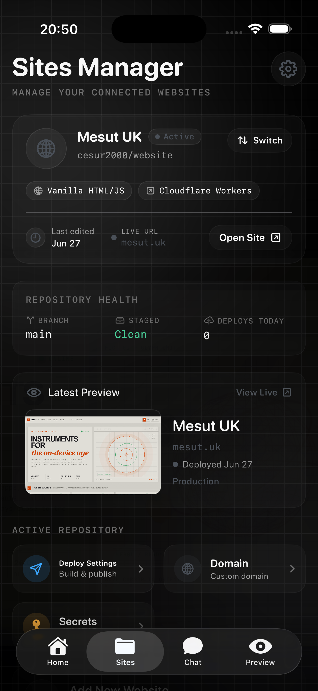
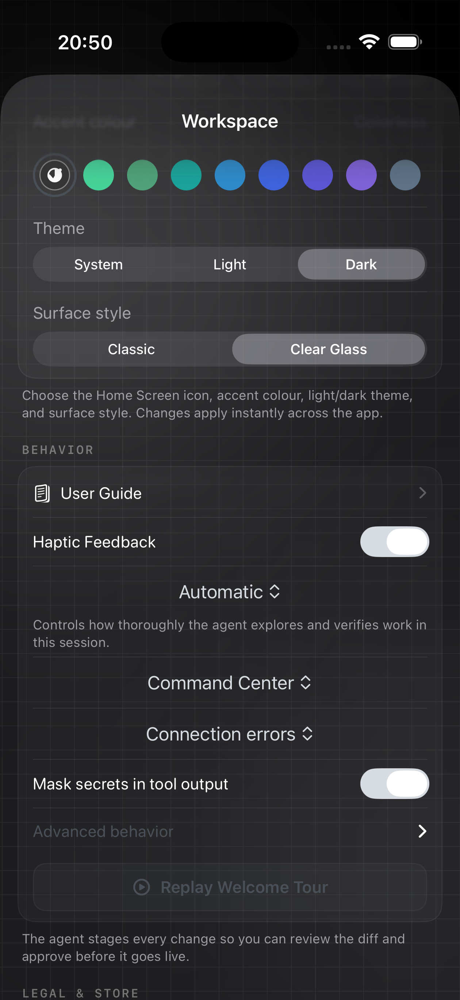

iOS sideload build • 1.16
A calmer command center for your websites.
Connect a site, talk to your agent, review changes, and keep deployments in reach — all inside a quiet, glassy iOS workspace.
Built for sideloading · paywall-free build · memory entitlements retained
within reach.
Current simulator captures
The app in its dark, colorless glass skin.
Captured from the booted iOS simulator after the Deployment fix. Sensitive repository and billing identifiers are blurred; the site name and domain remain readable.





One workspace
Everything important, easy to scan.
| Surface | What it brings together | Signal |
|---|---|---|
| Command Center | Site status, sessions, recommendations, and deployment history | Ready |
| Agent Chat | Goal-oriented starter tasks with tool-capable model routing | AI Ready |
| Deployment | Hosting setup, deploy hooks, verification, and advanced controls | Connected |
| Sites Manager | Repository health, live URL, preview, secrets, and domain entry points | Up to date |
| Appearance | Colorless accent, Dark theme, and Clear Glass surface style | Selected |
Latest sideload release
A build you can carry with you.
Release 1.16 includes the Deployment crash hardening, the neutral glass contrast pass, the paywall-free sideload marker, and the retained on-device memory entitlements.
SHA-256: 3ce3e6b0697bc9df6f45634a2aa21bdd574597c6c5d15c2e04c75fd550720fd4
Release note. The Deployment sheet is now presented through a concrete settings wrapper and delayed scroll work is cancelled when the sheet disappears, removing the sideload-only crash path we found. Dynamic deployment URLs now fail gracefully instead of force-unwrapping.